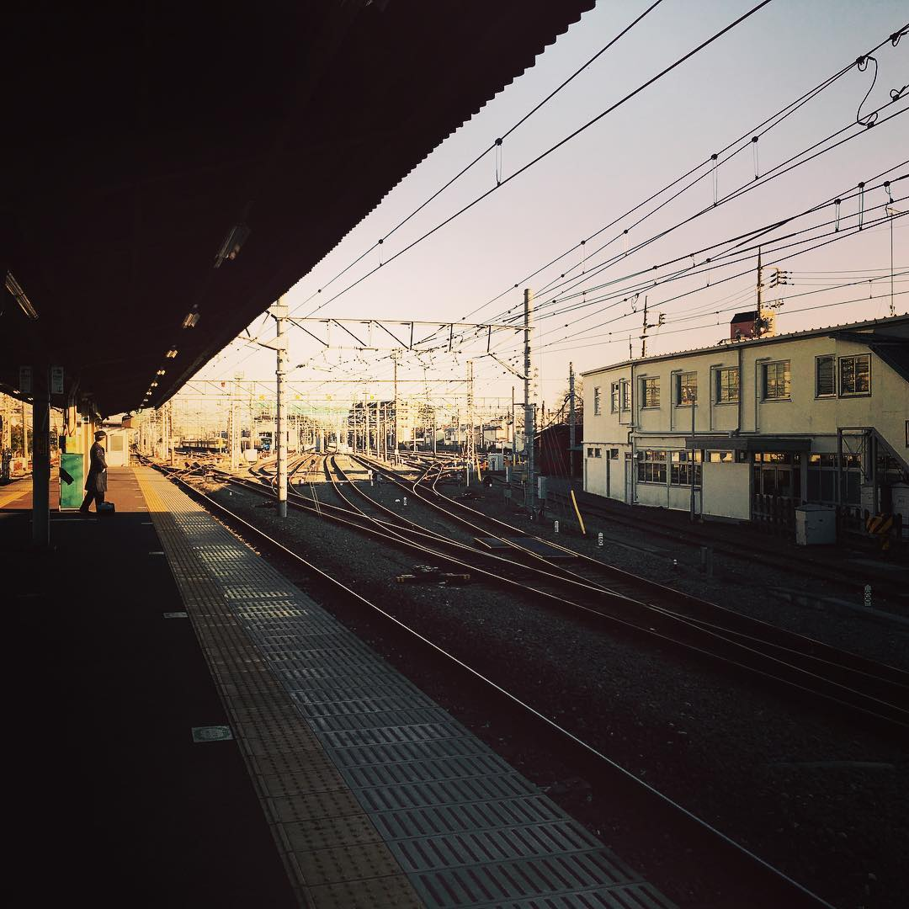

末班車
二〇二六 · 夏
日色已斜，站棚底下比別處先暗了下來，惟遠方尚留著一片薄金，斜斜照在縱橫的鐵軌上，一條明，一條滅，曲曲折折地伸向看不見的地方。頭頂電線牽連錯落，遠望原還清楚，仰頭久了，反倒辨不出哪一根從何處來，又往何處去。
我站在月臺盡頭，手裡提著一個小小的包袱。
前一班車已經去了，下一班尚有些時候。候車室裡原有空位，只是人多，進去少不得有人問一句往哪裡去，又問投奔何人。這些話原是好意，答起來卻很費事，我便仍站在簷下，看那夕陽一寸寸從軌道間退去。
包袱裡不過兩件換洗衣裳，還有臨出門時塞進去的一點乾糧。那封信卻不曾放在裡頭，仍藏在袖中，折了又折，紙邊早已磨得發軟，末尾幾個字的墨色，也教指腹摩得淡了。
信上的話原也尋常，不過問了一句近況，又說此地近日多雨。到了末尾，才像無心似地添道：
「若有一日想到這裡來，也未嘗不可。」
既沒有說何時來，也不曾提起相候二字。教旁人看見，大約只當一句客套，我卻偏將那幾個字看了許多遍。今日走到這裡，也是讀著讀著，便不知怎的走來了；若真問上車以後如何，手中的包袱忽然又覺得太輕。
站舍那邊有人將燈點起來了。
我回頭望了一眼，手已探進袖中，指尖碰著那封信，停了一會兒，終究沒有取出。遠處忽有鈴聲傳來，腳下的鐵軌也微微顫動，想是車將到了。
身後忽有人喚了一聲，我不覺回頭。原是有人指著遺在長凳上的皮箱，叫腳夫取去。
夕光愈發淡了，站棚的影子又向前移了一些。我低頭理了理衣襟，把包袱換到另一隻手上。
暮色裡，幾條鐵軌到了前方，各自分開。遠處站吏報了一聲車名，我分明聽見了，腳下卻沒有動。